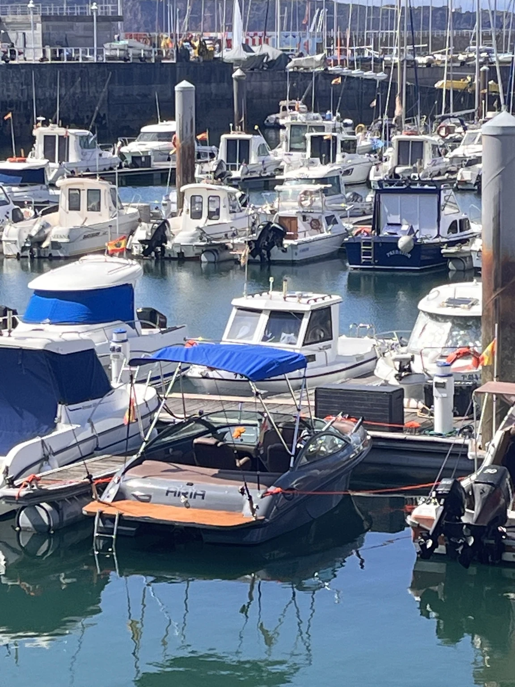

Apartamento para cuatro en Colunga
Dormitorio de cama doble y sofá cama: un espacio cómodo para compartir entre cuatro.
Imagina tus días aquí
Elige las fechas de tu estancia. Hernán te confirmará disponibilidad y precio personalmente.
Explorar la vivienda¿Cuándo te gustaría venir?
Consulta disponibilidad y precio para tus fechas. Tu estancia quedará reservada cuando recibas la confirmación.
Abre la puerta.
Imagínate aquí.
Recorre la casa o ve directamente a la estancia que te apetezca conocer.
¿Por dónde empezamos?
¿Qué quieres saber?
Toca una tarjeta para abrirla.
Fotos de la casaDesliza para ver la vivienda+
Dónde dormirásDormitorios+
- Dormitorio con cama doble y armario.
- Sofá cama en el salón.
- El sofá cama permite compartir la estancia hasta cuatro personas.
Cocina y salón+
- Vitrocerámica, horno, frigorífico y microondas.
- Cafetera de filtro y lavadora.
- Mesa de comedor con cuatro sillas y televisor.
El bañoBaño+
- Bañera con mampara.
- Lavabo, inodoro y bidé.
- Ventana al exterior.

EntornoColunga, la costa y el Sueve+
Un paseo por Colunga, un día de playa en La Griega o una visita a Lastres. Combina el mar con el Museo del Jurásico y los paisajes del Sueve.
En Colunga encontrarás bares, restaurantes y supermercados para el día a día. Pregúntale a Hernán por ideas para tu estancia.
La urbanización tiene acceso a una pista de tenis. Consulta las condiciones de uso para tus fechas.
La urbanización


Consulta las fechas y condiciones de apertura de la piscina antes de reservar.
Normas y convivenciaAntes de llegar+
- Cuida la vivienda y respeta el descanso de los vecinos, especialmente por la noche.
- Confirma con Hernán los horarios de entrada y salida y el número de personas de la estancia.
- Si viajas con mascotas o necesitas saber las condiciones sobre tabaco y visitas, consúltalo antes de reservar.
- Si algo no funciona o necesitas ayuda durante la estancia, habla directamente con tu anfitrión.

Pregunta lo que quieras sobre esta vivienda
Soy el asistente de esta vivienda. Te ayudo a conocer sus espacios y a preparar tus días en Colunga.
No compartas datos personales. Tus preguntas se envían a Google Gemini para responder. Privacidad.
Si necesitas una respuesta personal o un dato no confirmado, habla con Hernán por WhatsApp ↗